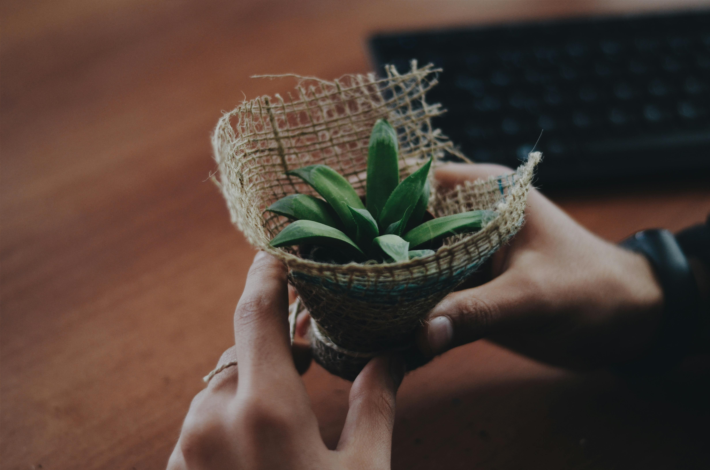
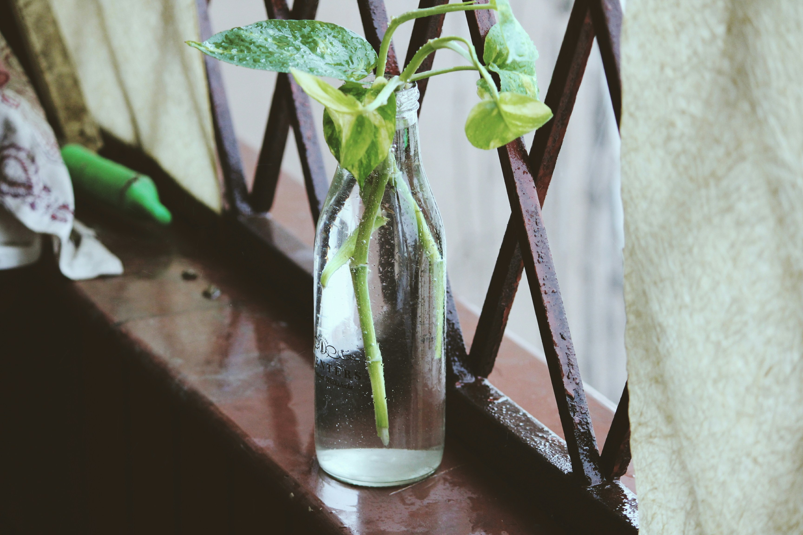
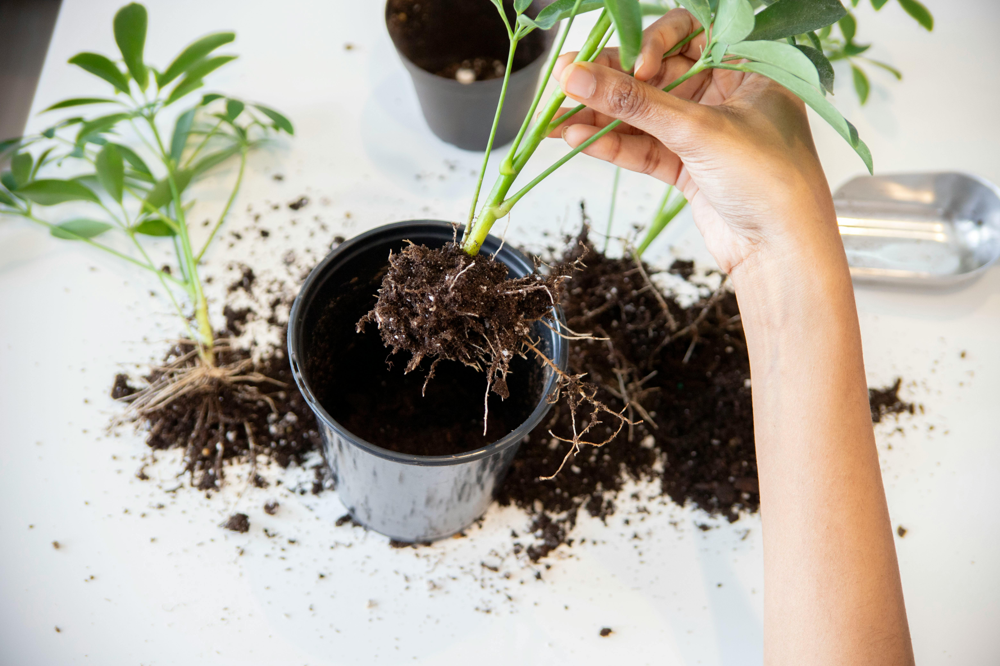
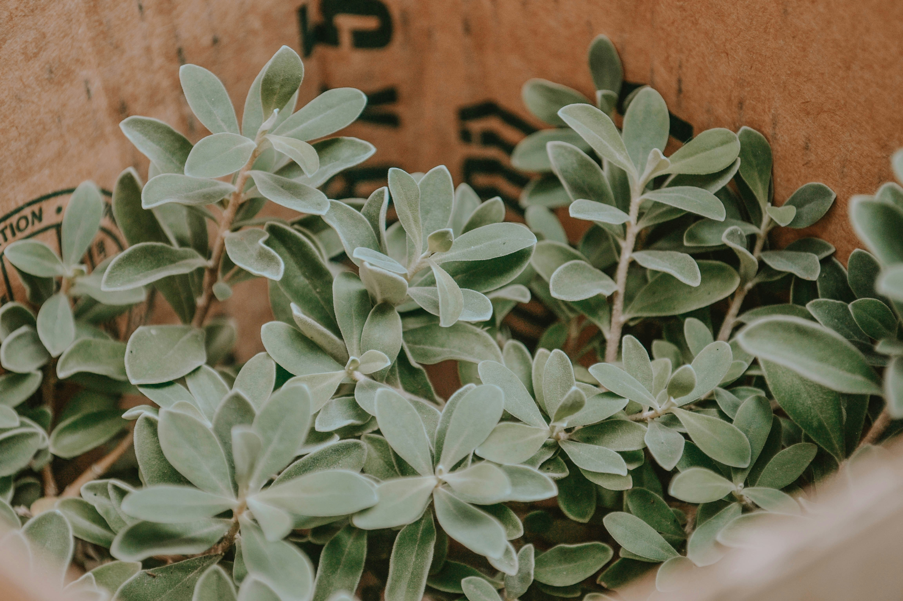

Brilliant and Easy Plant Care Tips
Plant care isn’t always the easiest when you’re unsure of where to start. Once you learn plant care basics and find a routine, you’ll notice all the wonderful benefits of being a plant parent. Research has shown that plants can help you breathe happier and boost your mood just by having them around. Whether you’re decking out your room or office with houseplants, we’ve highlighted some top plant care tips to assist you in taking care of your new plant babies. Following these plant care instructions will come to you as second nature very soon!
Feel the Soil to Know How Often to Water Your Plants

For potted plants at home, you may be unsure of how often to water them. For most plants, the golden rule is to see if the first inch or so of soil is dry. If dry, this is an indication that the plant needs water. If there are leaves that have shriveled or are dry/discolored, the plant might need a little extra water than a regular routine.
It’s Better to Underwater Your Plants Than Overwater Them

A plant can recover faster from being deprived of water than one given excess water. To rescue an overwatered plant, you may need to repot the plant and remove any unhealthy roots and overwatered soil before moving the plant into a new pot.
Skip Fertilization for Houseplants if You’re Unsure

Houseplants don’t require fertilization unless they are struggling to grow. If you’re unsure of how much or what type of fertilization to use when planting, it’s better to skip that step altogether. Too much fertilization may actually end up killing your plant rather than helping it.
Houseplants Love Stability

We recommend scoping out where you’ll put your plant in your house before picking one out. Plants thrive once they are used to their surroundings and finding a spot with the right amount of light is important. Temperature is also important. Fluctuating temperatures will shock your plant and therefore lead to the plant not being able to develop and maybe even die. Most plants prefer temperatures of 65º–75ºF.
Smaller Plants Are the Fastest Growing Plants
When buying your chosen plant, it’s always better to purchase a smaller plant over a larger one. This is because a smaller plant will be able to get more established in its home and have a larger ratio of roots to top growth. A larger plant will not continue to grow until its roots catch up with the top growth.
Water Deeply, Rather Than Lightly and Frequently

When you water lightly and frequently, only the top roots are able to drink the water, and your plant may not receive the fuel it needs to survive. Watering deeply, which entails watering your plants heavily with water, allows for all the roots to grab a drink. To avoid overwatering, slowly water your plant and watch for when the water is not draining through the soil anymore. Once you notice this, stop there.
Prune Your Plants

Getting rid of old-growth on your plants will help your plants grow again. This is kind of like how trimming the dead ends of your hair will help your hair grow again. After winter is when you’ll see some of the tips or leaves of your plant dying, so a simple plant haircut will do!
Try Out a DIY Self-Watering Planter
Hiring a plant sitter may be difficult if you’re crunched for time or budget, but don’t fear for your plants’ lives — there are many ways to water your plants while you’re away. Some methods include recycling glass and plastic bottles or creating your own drip system. To learn how to craft these DIY self-watering methods, follow our guide on watering your plants while away.
Don’t Repot Your Plants by Pulling Them!
Pulling a plant out will not only ruin the stems, leaves, and blossoms but will also tear roots. Damaged roots need to heal before they can fully take in nutrients, so pulling your plant out of its pot is never a good plan. Check out our guide on repotting a plant to guarantee no damage to your plant.
Dust Your Plants!
Plants that collect too much dust on their leaves can’t get the sunlight they may need to survive, especially green plants and plants with big leaves. A few times per year, use a wet cloth and lightly wipe down the leaves of your plants on both sides.